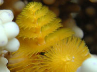

A yellow Christmas tree worm

Sea worm lives
on a white stony coral
( Spirobranchus giganteus )
You see color spiral tentacles and a cap of the worm's house-tube. The yellow spirals are the worm's respiratory organ. The body of the worm constantly hides in a calcareous tube, that is embedded into coral.
This worm has chosen the Fire coral (Millepora) . After touching this coral the burn remains for a day or two. I'd already touched fire coral so then I wasn't touching anything and was focusing my camera hanging in water, that is not easy.